VW Head-Up Display
A self-built head-up display for a VW Sharan. It taps the car's native CAN bus — not OBD-II — and shows revs, speed, fuel and gear on a crisp 128×64 OLED, with a driving page and an idle page. Built on an Arduino and a handful of cheap parts.
See it running


Reading the screen
The 128×64 OLED shows two pages. Every reading — RPM bar, fuel, consumption, speed, gear, trip — lives in a fixed zone, so the eye always finds it in the same place.


Build it yourself
The firmware now compiles in CI for six boards across five architectures — from the classic ATmega328 (Uno / Nano) up to the RP2040 and the RISC-V ESP32-C3. Most carry an MCP2515 on the shared SPI bus (onboard on the CANBed); the ESP32-C3 instead drives CAN through its built-in TWAI controller. The OLED rides the same SPI bus. The main assembly targets the CANBed RP2040, whose plans are below.
| Board | MCU | Clock | ROM | RAM | CAN | Active | Deep sleep |
|---|---|---|---|---|---|---|---|
| Arduino Nano (classic) / Uno | ATmega328P | 16 MHz | 32 KB | 2 KB | external MCP2515 | ~0.3–0.55 W | ~10–25 mA @12 V * |
| Arduino Nano Every | ATmega4809 | 20 MHz | 48 KB | 6 KB | external MCP2515 | ~0.3–0.55 W | idle only † |
| Seeed XIAO SAMD21 | SAMD21 (Cortex-M0+) | 48 MHz | 256 KB | 32 KB | external MCP2515 | ~0.3–0.5 W | idle only † |
| CANBed RP2040 (main assembly) | RP2040 | 133 MHz | 2 MB | 264 KB | MCP2515 onboard | ~0.3–0.5 W | idle only † |
| Seeed XIAO ESP32-C3 | ESP32-C3 (RISC-V) | 160 MHz | 4 MB | 400 KB | native TWAI + transceiver | ~0.4–0.7 W | idle only † |
Rough estimates from datasheet typicals (board + CAN controller/transceiver + OLED),
for a mostly-dark HUD page. Active shows power, not current: both builds land around half a watt
with the engine running — that comes from the alternator, so it is not what matters. The real concern is
deep sleep (MCU power-down + OLED off) draining the battery while parked, so it is given as current
on the 12 V line. Compare it to the ~30–50 mA the car already draws at rest and a ~45–70 Ah battery:
single-digit mA lets you park for months. * The classic build's ~10–25 mA is dominated by
the Nano/Uno USB-serial chip, its power LED and the MCP2515 module's LED — strip those and it
falls below ~1 mA. † Real MCU power-down ships only on the classic-AVR build today
(PowerManager uses avr/sleep.h); on the Nano Every, XIAO SAMD21, CANBed and ESP32-C3 the
power manager is still a portable no-op, so they keep running near their active draw with the screen
off — per-arch deep-sleep is a planned follow-up (the RP2040's dormant mode and the ESP32-C3's deep-sleep
make sub-10 mA reachable once it lands). Not yet measured in-car — treat as orders of magnitude.
Want to park longer between drives? That standby figure is almost all board housekeeping, not the firmware — so a few cheap mods claw most of it back:
- Kill the always-on LEDs. Desolder the power LED on the Nano/Uno and the one on the blue MCP2515 module. ~3–10 mA each — the single biggest win.
- Drop the USB-serial chip. Program once, then run a bare ATmega328 (or remove the CH340 / ATmega16U2). ~several mA of standby bridge draw. The CANBed has none of this to begin with.
- Actually sleep the parts. MCU in power-down and the OLED in display-off once the ignition is gone, waking on Klemme 15 / CAN activity — what the firmware's PowerManager and the éteint / veille state machine are for (see the design notes). Real power-down works on the classic-AVR build today; the other architectures fall back to a no-op until their per-arch sleep lands.
- Pick a low-Iq regulator. The AMS1117 LDO on a Nano both burns the 12→5 V drop as heat and idles at milliamps; a low-quiescent buck converter avoids both. The CANBed's onboard 9–28 V buck already does this.
Stack those on the classic-AVR build — the one that actually powers down today — and standby drops from ~10–25 mA toward < ~1 mA, into "park it for months" territory. The other architectures reach the same once their per-arch deep-sleep lands.
Hardware
Dimensioned drawings of the two boards in the main assembly, and how they wire together. Click a plan to open it full size.